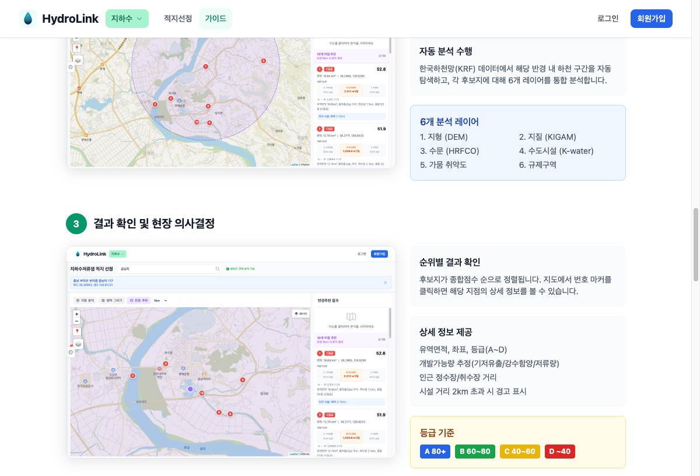

PREVIEW
지하수저류댐 적지선정 가이드

반경 추천 분석 결과 & 현장 의사결정
수문조사 시스템 로그인 (Google / 카카오 지원)
GUIDE
자세한 가이드는 공식 가이드 페이지에서 확인하세요.
01
검색창에 지명/주소/좌표를 입력하거나 지도에서 직접 클릭. 지점 분석, 영역 그리기, 반경 추천 3가지 모드 지원.
02
1~5km 탐색 반경을 설정하면 한국하천망(KRF) 데이터에서 후보지를 자동 탐색, 6개 레이어 통합 분석.
03
종합점수 순 정렬, A~D 등급 표시. 유역면적, 개발가능량, 인근 정수장 거리까지 한눈에 확인.
PROBLEM
MODULES
유량측정 · 불확도 분석 · 수문 데이터
유속-면적법 기반 측점별 불확도 자동 계산. 국제 표준 준수.
HRFCO API 연동. 수위·유량 조회, 댐 방류 표시, 관측소 선택.
직접유출·기저유출 자동 분리, 그래프 시각화, 결과 다운로드.
수위-유량 관계 분석 및 곡선 생성.
Google Earth Engine 기반 증발산량 산정, 유역 분석.
측정 결과 자동 보고서 생성. Excel 가져오기/내보내기.
GIS 분석 · 6개 데이터 레이어 · 자동 추천
지도 클릭 또는 검색으로 관심 지역 선택. 반경 추천으로 최적 후보지 발견.
DEM 지형, KIGAM 지질, HRFCO 수문, K-water 수리시설, 가뭄취약성, 규제구역.
분석 결과를 현장에서 바로 확인, 적합 여부 즉시 판단, 인허가 절차 착수.
DATA
지형
DEM 수치표고모델
지질
KIGAM 지질도
수문
HRFCO 수문관측
시설
K-water 수리시설
재해
가뭄취약성 지수
규제
규제구역 데이터
VERIFICATION
71~83%
K-water 실제 시공지와의 일치율
30+
관련 SCI 논문
5,740
분석 완료 하천 구간
WORKFLOW
01
후보지 탐색
지도 검색 & 반경 분석
02
데이터 분석
6개 레이어 종합 평가
03
현장 판단
모바일 현장 확인
04
수문 조사
유량측정 & 불확도
05
시추 착수
보고서 & 인허가
TECHNOLOGY